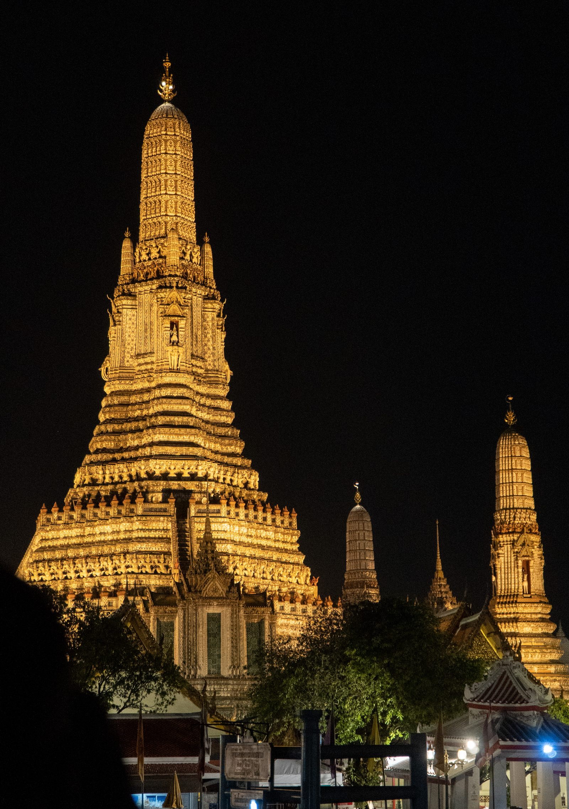
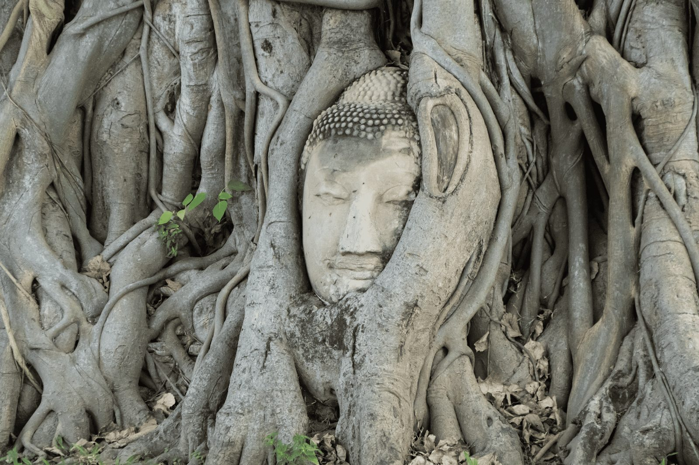
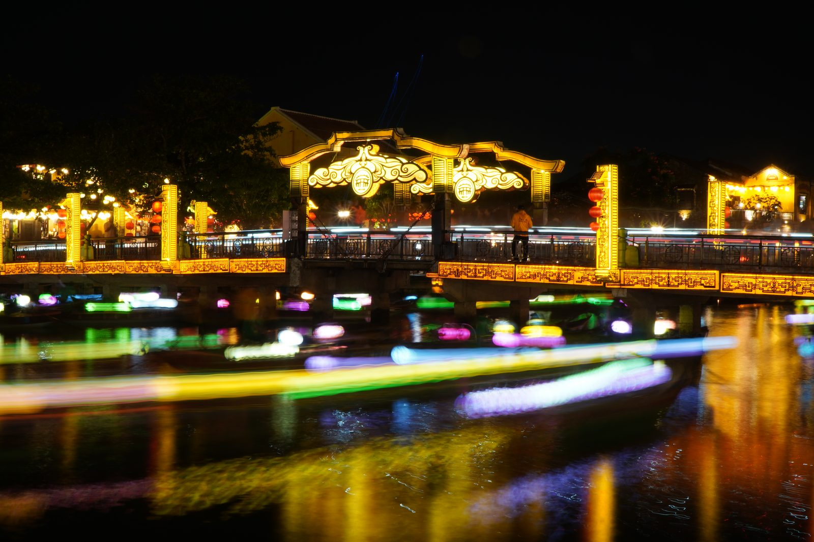

Le Nostre Tappe

Tra templi dorati, mercati caotici e grattacieli moderni: l'inizio della nostra straordinaria avventura in Thailandia.

Un viaggio fotografico nel tempo tra le maestose rovine, lo stile Khmer e i misteri della Thailandia antica.

La Thailandia più verde e spirituale, circondata da montagne sacre, santuari e un'atmosfera d'altri tempi.

Un piccolo paradiso hippie nascosto tra canyon, cascate e infinite curve panoramiche.

Spiagge tropicali di sabbia bianca, acque cristalline ed escursioni tra maestosi faraglioni calcarei a picco sul mare.

La vecchia Saigon: un fiume inarrestabile di motorini, architettura coloniale e mercati storici.

Dalle lanterne magiche della città vecchia sul fiume ai ponti futuristici e le spiagge della costa vietnamita.

Terrazze di riso verde smeraldo, spiritualità profonda nei templi induisti e tramonti sull'oceano.

Dall'Asia all'Oceania: la fine del grande viaggio e l'inizio di una nuova avventura tra spiagge infinite e cieli sconfinati.